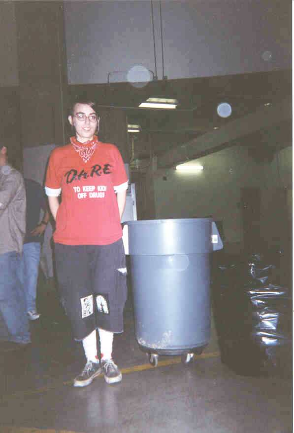
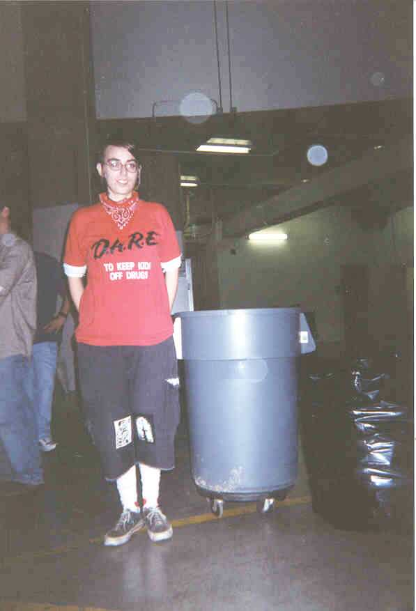

December 2001
Waste Audit Results

We began with bags of trash from North Carrick Hall.

And separated the trash into piles of paper, plastic, cardboard, aluminum, and waste.

Renee with trash can.

We began with bags of trash from North Carrick Hall.
And separated the trash into piles of paper, plastic, cardboard, aluminum, and waste.

Renee with trash can.